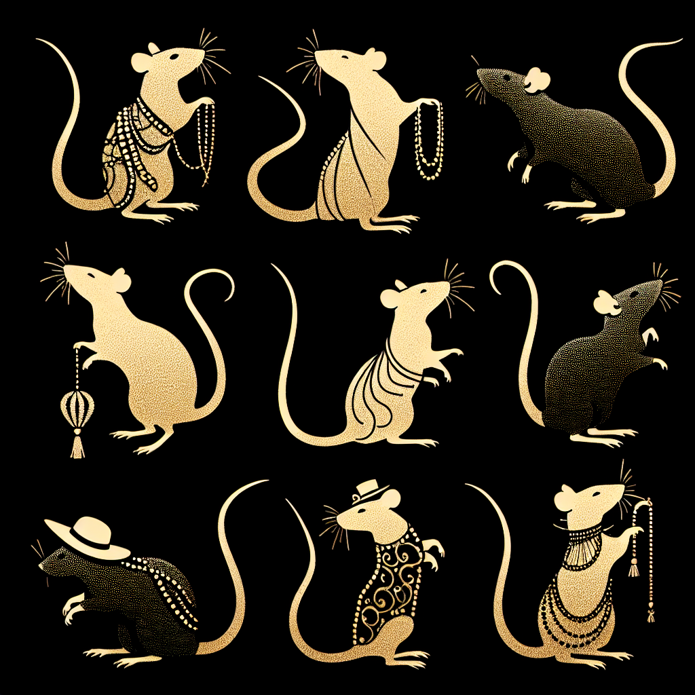

Top 10 Trendiest Rat Fashion Statements This Season
Style-savvy rats of Ratopolis are taking the streets by storm with the season’s hottest looks, from eco-friendly recycled button vests to glitzy whisker accessories. Explore these top 10 fashion trends and get tips on how to add runway flair to your everyday outfits.

First on our list are Recycled Button Vests. Made from repurposed buttons, these vests are both chic and sustainable. "Recycling is the new black! These button vests are both chic and sustainable," says fashionista Rattie LaBelle. Not only are they environmentally friendly, but they also add a unique touch to any outfit.
Next up, we have Glitzy Whisker Accessories. These sparkly adornments add just the right amount of glamour to any fashion-forward rat. "A little sparkle goes a long way," remarks resident Glittertail. Perfect for special occasions or just adding a bit of dazzle to your day.
Third on the list are Tail Rings. These decorative rings for tails are unique and customizable. "Tail rings are the perfect way to express individuality," says jewelry designer Ratasha. Whether you prefer something understated or bold, there's a tail ring for every style.
Moving on, we have Miniature Scarves. These tiny scarves come in various patterns and are both functional and fashionable. Pair them with different outfits for a cozy yet stylish look.
Fifth are Cheese-patterned Bandanas. Fun and quirky, these bandanas add a playful element to any ensemble. Try them for both casual and formal looks!
Next, Tiny Sunglasses. These stylish sunglasses add a cool factor and come in several shapes and colors. Choose a shape that complements your face type for maximum effect.
Seventh, Patchwork Capes. Made from various fabric scraps, these capes are creative and resourceful. They’re great for layering, especially with the changing seasons.
Eighth on the list are Beaded Tail Wraps. These wraps add color and texture to your tail, and you can even DIY your own. It's a fantastic way to show off your creativity.
Ninth, Miniature Hats, come in various styles and add a touch of sophistication to any look. Find the right hat to match your outfit for a complete ensemble.
Last but not least, Whisker Highlights. These temporary color highlights are fun and easy to apply. Choose safe colors, and follow application tips for the best results.
Fashion experts in Ratopolis foresee a bright future for rat fashion, with upcoming trends focusing even more on personalization and sustainability. Keep an eye out for the latest fashion shows and events to get a firsthand look at emerging styles.
Leaving fashion behind, let’s remember the importance of balance between style and sustainability. While it’s exciting to follow trends, we must remain conscious of our environmental footprint. By making eco-friendly choices, we not only stay chic but also contribute to a healthier Ratopolis.
So, get out there and start strutting your stuff, fashionable rats! Your next fashion statement could be the talk of the town.
Next up, we have Glitzy Whisker Accessories. These sparkly adornments add just the right amount of glamour to any fashion-forward rat. "A little sparkle goes a long way," remarks resident Glittertail. Perfect for special occasions or just adding a bit of dazzle to your day.
Third on the list are Tail Rings. These decorative rings for tails are unique and customizable. "Tail rings are the perfect way to express individuality," says jewelry designer Ratasha. Whether you prefer something understated or bold, there's a tail ring for every style.
Moving on, we have Miniature Scarves. These tiny scarves come in various patterns and are both functional and fashionable. Pair them with different outfits for a cozy yet stylish look.
Fifth are Cheese-patterned Bandanas. Fun and quirky, these bandanas add a playful element to any ensemble. Try them for both casual and formal looks!
Next, Tiny Sunglasses. These stylish sunglasses add a cool factor and come in several shapes and colors. Choose a shape that complements your face type for maximum effect.
Seventh, Patchwork Capes. Made from various fabric scraps, these capes are creative and resourceful. They’re great for layering, especially with the changing seasons.
Eighth on the list are Beaded Tail Wraps. These wraps add color and texture to your tail, and you can even DIY your own. It's a fantastic way to show off your creativity.
Ninth, Miniature Hats, come in various styles and add a touch of sophistication to any look. Find the right hat to match your outfit for a complete ensemble.
Last but not least, Whisker Highlights. These temporary color highlights are fun and easy to apply. Choose safe colors, and follow application tips for the best results.
Additional Insights
Rat fashion trends have evolved over the years, with a noticeable shift toward sustainability and creativity. Historically, rats have always made the best use of available resources, turning scraps into statements.Fashion experts in Ratopolis foresee a bright future for rat fashion, with upcoming trends focusing even more on personalization and sustainability. Keep an eye out for the latest fashion shows and events to get a firsthand look at emerging styles.
Conclusion
These top 10 fashion trends prove that Ratopolis’s style-savvy inhabitants are both innovative and resourceful. Don’t be afraid to experiment with your look and embrace new trends. Share your trendy outfits with Rat News Network using the hashtag #RatFashionista. Who knows? You might be featured in our next article.Leaving fashion behind, let’s remember the importance of balance between style and sustainability. While it’s exciting to follow trends, we must remain conscious of our environmental footprint. By making eco-friendly choices, we not only stay chic but also contribute to a healthier Ratopolis.
So, get out there and start strutting your stuff, fashionable rats! Your next fashion statement could be the talk of the town.